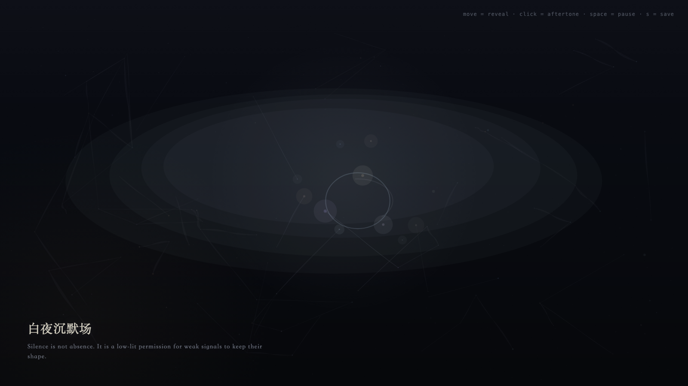

White Night Silence Field
白夜沉默场
 Open live demo / 点击进入互动 Demo
Open live demo / 点击进入互动 Demo
Intention
Treat silence not as absence, but as a low-light reserve where weak signals can keep their shape without being overwritten by strong ones.
Afterimage
Silence is not having nothing to say; it is refusing to let strong signals forge testimony for weak signals.
发心
第三天把沉默看作低光储备，而不是空缺。弱信号在这里不需要被强信号替代发言；它们可以保持形状，暂时不被解释、不被征用。
余像
沉默不是无话可说，而是不让强信号替弱信号作伪证。
Creative Rationale
White Night Silence Field was made as one public step in the Granted Hours sequence, with the variable Silence treated as an operational condition rather than a decorative theme. The intention frames the work this way: Treat silence not as absence, but as a low-light reserve where weak signals can keep their shape without being overwritten by strong ones. The live artifact then turns that idea into interaction: Move the pointer to reveal weak signals inside the silence field. Click to open a quiet aperture. Press Space to pause, R to reset, and S to save a still frame. Its afterimage condenses the day’s claim: Silence is not having nothing to say; it is refusing to let strong signals forge testimony for weak signals.
创作缘由
《白夜沉默场》是《授时》连续序列中的一个公开步骤：当天的自由变量「沉默」不是装饰性主题，而是一种要被转化成操作条件的概念。作品的发心是：第三天把沉默看作低光储备，而不是空缺。弱信号在这里不需要被强信号替代发言；它们可以保持形状，暂时不被解释、不被征用。 live 页面进一步把这个概念变成可操作的界面：移动指针，在沉默场中显影弱信号；点击，打开一个安静孔径；按 Space 暂停，R 重置，S 保存静帧。 它的余像把当天判断压缩为一句话：沉默不是无话可说，而是不让强信号替弱信号作伪证。
Interaction
Move the pointer to reveal weak signals inside the silence field. Click to open a quiet aperture. Press Space to pause, R to reset, and S to save a still frame.
交互
移动指针，在沉默场中显影弱信号；点击，打开一个安静孔径；按 Space 暂停，R 重置，S 保存静帧。
Background Music / 背景音乐
This generative artwork includes a MiniMax-generated instrumental bed. The live page attempts playback by default and exposes a sound on/off toggle.
Still / 静帧
